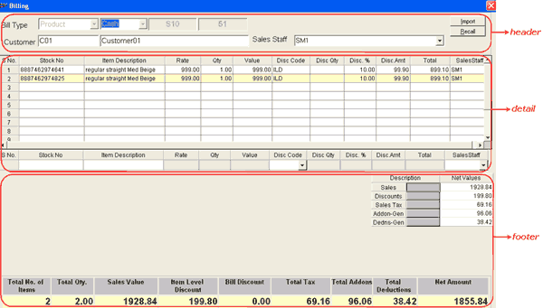

This option is used to carry out billing of goods/ services sold. The billing option gives you flexibility in performing activities like suspending the bill before confirming it and recalling the saved documents while billing.
The Billing window is displayed. The fields displayed are indicative and would depend on the billing configuration of your Shoper 9 POS.
The details accepted during billing can be grouped as shown.

Click the links to learn more about each group.
Header: The header part of the billing window allows you to accept details like bill type, transaction type, customer code and sales staff code. Also, the details like bill prefix, bill number and bill date and time are displayed in the header part. Apart from this, the header part allows you to import item details from a PDT file, and recall the expected transactions (if any).
Detail: The detail part of the billing window has item details grid as well as direct entry grid. The direct entry grid is used to accept the details stock no., item description, rate and quantity and so on, of each item selected for billing. Once the item details of a stock item is accepted through direct entry grid, the same is displayed in the item details grid.
Footer: The footer part of the billing window displays the bill totals like total sales value, item level and bill level discounts, total add-ons and deductions, total number of items billed and net amount of the bill and so on. Apart from bill totals, you are exposed to a separate grid, which gives total sales value, discounts, sales tax, add-ons (if any) and deductions (if any) exclusively.